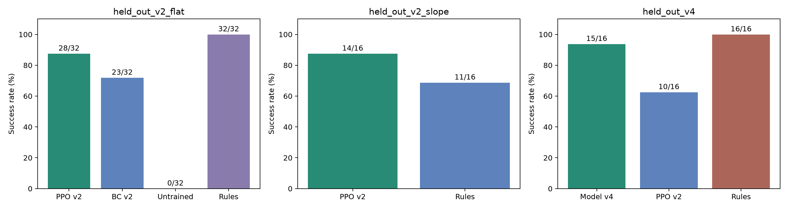

LEARNED ROBOT CONTROL
学会移动，
再走进盲区。
神经网络根据机器人状态和目标点控制轮速、转向与腿部姿态残差。用真实月面重力动力学训练，再把同一模型放进候选预演和独立环境执行。
查看模型实际执行 ↓01 / HELD-OUT TASKS
训练后，能完成多少任务？
每组对照使用相同目标、初始姿态和时限。测试种子与训练、模型选择验证分开；成功同时要求到达、指定朝向和停稳。
正在加载真实评估记录…
任务结果用于检验模型能力；网页回放已完成实验。图规划和生成几何准入仍是独立系统模块，底层动作由训练权重产生。
02 / REAL PHYSICS EXECUTION
模型怎样控制机器人？
0.0 s
神经网络的四个动作输出
绿色：前进轮速；橙色：差速转向；蓝色和紫色：前、后腿姿态残差。曲线显示归一化网络输出；停稳制动标为 brake。
03 / EVIDENCE
成功、失败和改进都有记录。
第一版在关口碰撞；第二版完成关口与双岩石任务，但大角度短距离目标仍会失败。后续训练根据这些问题扩展真实示教，保留每版权重、来源、曲线和独立结果。

训练方法、模型版本与复现命令 ↗